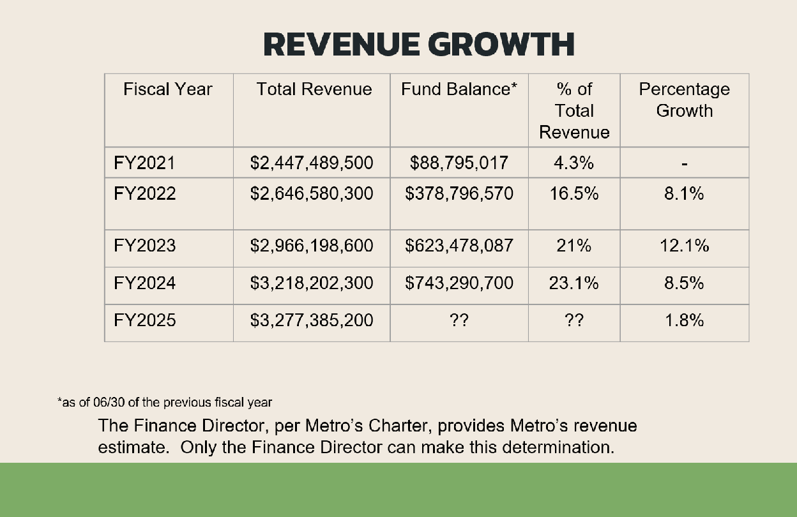
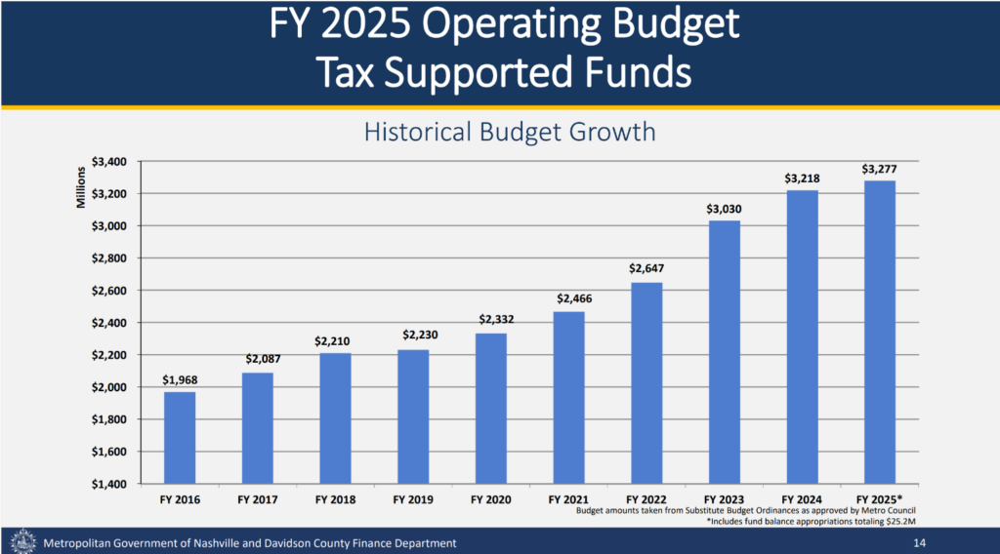
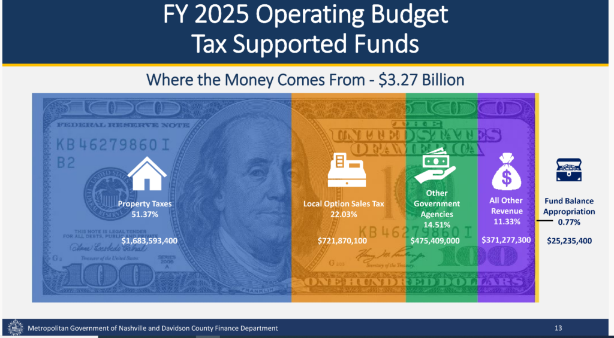
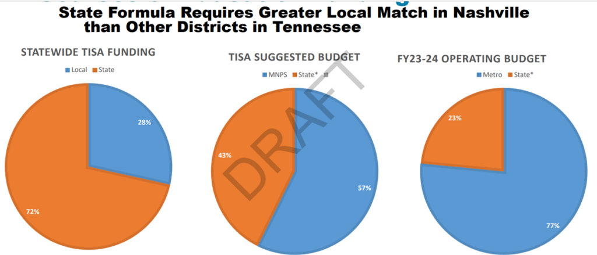
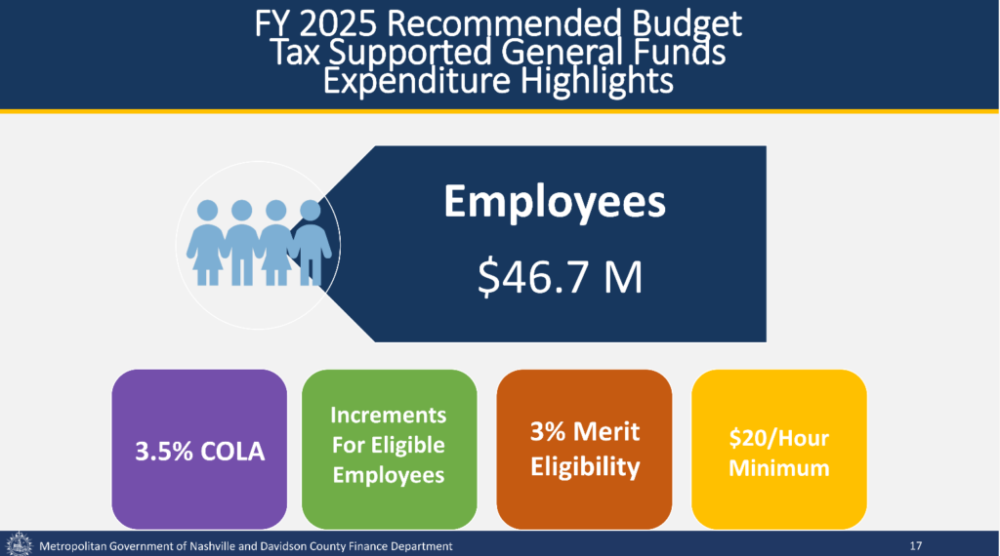
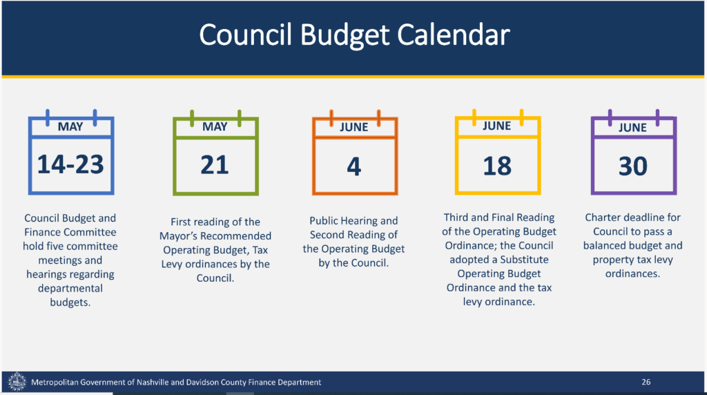
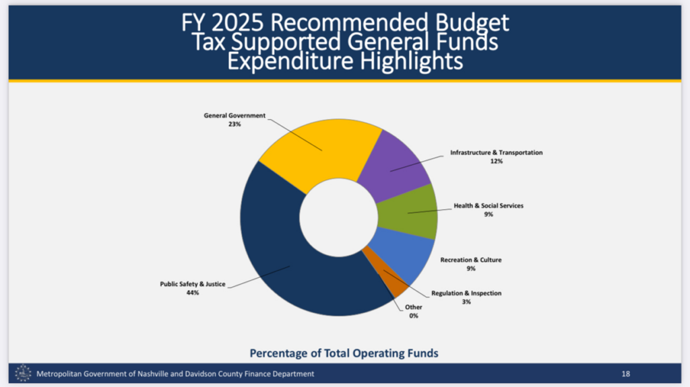
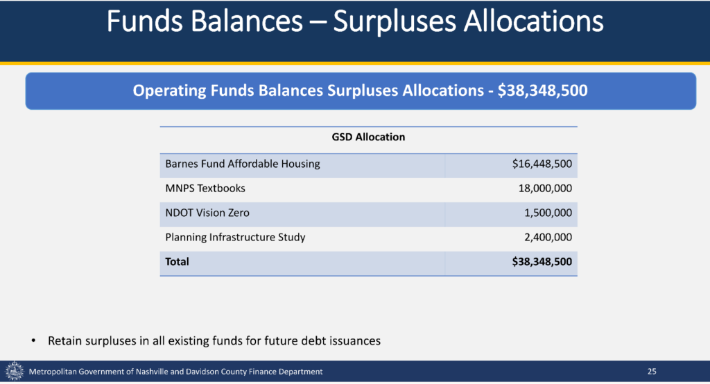
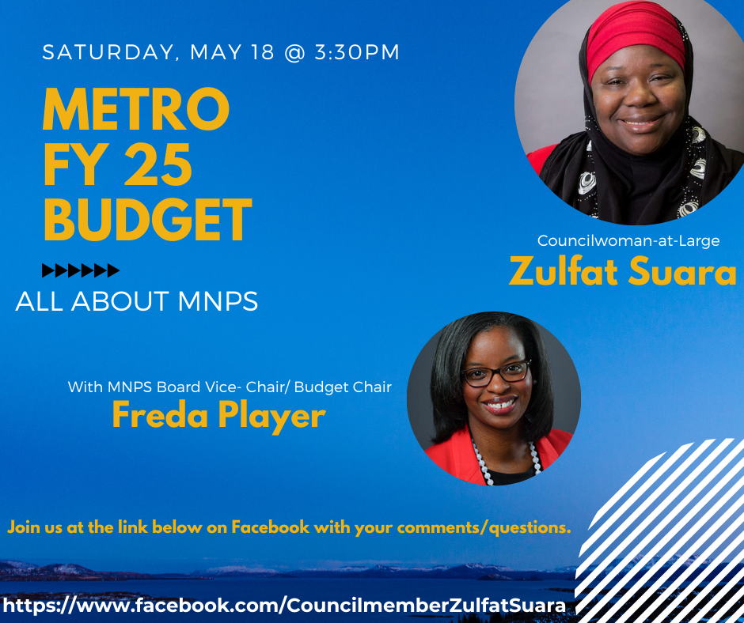
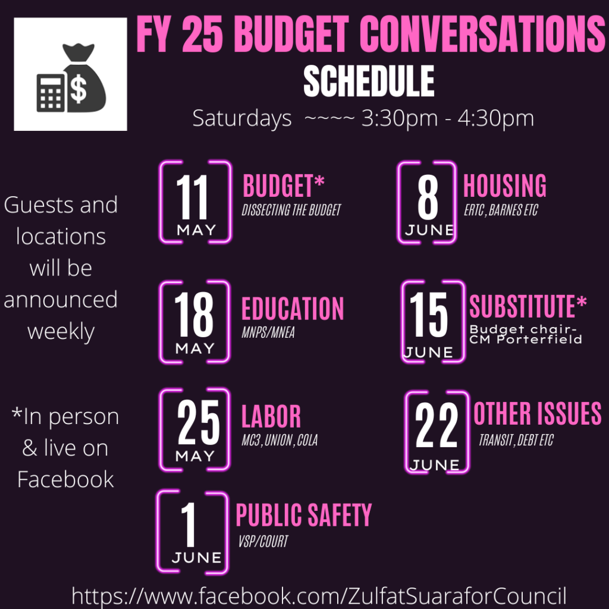

Dissecting Mayor O’Connell’s FY 25 Budget
Hello, everyone! Since this is my first post since my re-election, I want to thank you again through this medium for the opportunity to serve you for another term. Thanks to your vote, I became the first person of color to win first chair in Metro Nashville’s 60-year history (#1 vote getter). I am grateful for your continued support and confidence in me and for the opportunity to serve alongside some amazing people.
Since re-election I have remained busy working towards a Nashville for All, as promised. I was voted council pro tempore unanimously by my colleagues for the 2023-2024 year and have been presiding over the announcement period. I have continued to serve on the Budget Committee, as well as the Executive and Charter committees. I initiated the first Youth in Local Government Day, where 61 students, in partnership with the Vice-Mayor, Metro Council, MNPS and NCYC, were provided the opportunity to meet with and propose solutions to their respective council members and school board members. You can watch the students’ powerful presentation to council here and the media coverage here.
I also had the honor of serving as the Chair of the Diane Nash Committee. I am grateful to all the committee members, partner organizations, volunteers and donors for coming together to celebrate Ms. Nash for her courage and convictions. The event featured guests such as Grammy-nominated artists Ms. Ruby Amanfu and India.Aire, Rev. James Lawson, Rep. Justin Jones, and Dr. Karida Brown. The festivities included a press conference, a parade, official plaza dedication and a banquet. You can watch the dedication ceremony here and the banquet ceremony here.
Finally, I am very proud that with the support of the administration and my colleagues, we are able to continue funding the Eviction Right to Councils program.
During the campaign, many of you told me how much you appreciated my Budget Conversations. Whether via social media or blog post, these sessions have allowed me to share my understanding of the budget and to learn from your valuable feedback. This has resulted in numerous wish lists and budget amendments over the years. I am therefore excited to kick off the first of this term.
FY 25 BUDGET
On May 1, 2024, Mayor filed the first budget of his administration. On the same day, the mayor addressed members of the Budget and Finance Committee. The special called meeting also featured a presentation by the Finance Department. The FY 25 budget is described as “Keep the Light On” budget that will be putting people first.
On May 11, I hosted my first Budget Conversation of my second term and was joined by my colleague and former Budget Chair CM Kyonzte Toombs as we delved deeper into the mayor’s budget. CM Toombs served as Budget vice- chair and was the Budget chair during the FY 22 budget season. Here is a summary of our conversation.
GENERAL OVERVIEW OF THE BUDGET:
The most important thing to note about the the FY25 budget is that it is a flat revenue. This means the revenue is at basically at the same amount as the prior year. Historically, Metro revenue was in a poor state from FY 19 to 20. Many will recall the infamous visit by the comptroller. Our financial position did not improve much in FY 21 despite the tax increase. The increase basically allowed us to correct our finances and get on more solid footing.
So if you look at fiscal years 21-24 (particularly 2022 through 2024), you see some pretty significant growth and revenue for the city. That’s representative of the construction boom in Nashville, as we have had a lot of new development coming online and higher than expected spending patterns. This has lead to more sales tax revenue than anticipated. As such, we were able to fund several initiatives and build up our fund balance.
And then we come to fiscal year 25, where the projected growth is 1.8%, which seems significantly lower than previous years.

What does the term flat budget mean?
The Finance Director indicated in his presentation that this is a flat budget. A flat budget means that there is not much difference in revenue from prior year. As indicated above, projected growth from Fy 24 to FY 25 is only 1.8%. This is significantly lowered than prior year. Since Metro budget has to be balanced (Revenue = Expenses), this means that funding or expenses for this year will have to be at a similar level as last year.

With such a low growth, should we be worried?
No. The small growth shows that we’re getting back to a normal pace of revenue growth. When the Finance Director gives our revenue projection, what we see in actual revenue at the end of the fiscal year should be within a few percentage points of that projection. And so this 1.8% is basically Metro getting back to a normal pace. It is important to note that per Metro Charter, it is solely within the authority of the Finance Director to set our revenue projection for the fiscal year. No one else can do that.
With the minimal growth in projected revenues, can we use fund balance to fund operations?
$25M of the accumulated fund balance was used to balance the FY 25 budget. In addition, there are some one-time spending from fund balance in the proposed budget. However it is important that we do not deplete these funds. The council last term passed an operating fund balance policy that requires that the fund balance be maintained at a minimum of 17%. The calculated operating surplus after this threshold can be used for one-time capital spending, debt reduction, and establishment of reserves, while the debt fund surplus can only be used for debt reduction.
The policy also provides that any use that reduces the operating reserve below the minimum required 17% level, shall include a justification presented to the Metropolitan Council and shall require approval from a majority of Council Members.
PROJECTED REVENUES
So where is the projected revenue of $3.27 billion coming from? The bulk of it comes from property taxes, that’s our most stable source of revenue. Property tax revenue represents $1.7M or 51.3% of the total budget. Our next largest pot is our local option sales tax which is about $722M or 22% of our budget. It is important to note that when you go to buy something at the store, and you see that 9.25 sales tax, the portion that comes to Metro is 2.25% and 7% to the state. There’s a slightly lower percentage for groceries.
Other revenue sources include other government agencies/grants of $477 million and all other revenues, of $371 million. Finally, this year, we are using $25M of our fund balance to make sure that our budget is structurally balanced. This means our revenue has to equal our expenses. The $25M appropriations ensures that we do not operate at a deficit which will be in violation of our charter as well as state law.
| Property Taxes | $1,683,593,400 |
| Local Option Sales Tax | $721,870,100 |
| Grants & Other Contributions | $475,409,000 |
| All Other Revenue | $371,277,300 |
| Fund Balance Appropriation | $25,235,400 |
| Total Projected Revenue | $3,277,385,200 |
It is important to note that the increase in property tax revenue is due to new development (both residential and commercial).

PROJECTED EXPENSES
The major expense categories for FY25 are as follows: Education at 38%, Debt Services at 13%, and other metro departments combine to make up the remaining 49%.
| Debt Service | $410,900,600 | 12.54% |
| Education | $1,247,078,900 | 38.05% |
| General Operating Fund | $1,619,405,700 | 49.41% |
| Total Expenses | $3,277,385,200 | 100.00% |
MNPS
Metro’s largest single expense is education. MNPS will receive funding of $1.24B, representing a $42M increase from the FY24 budget. The $42M allocated for continuity of service covers step increases for certificated and support staff and a 3.5% Cost of Living Adjustment (COLA). MNPS will also receive $18M from Fund Balance surplus to cover the cost of textbooks.
Tennessee’s Maintenance of Effort law prevents local funding from decreasing year to year, even if state funding increases. For Davidson County, as state funding continues to decrease, the Metro Government must cover the shortfall each year. It is worth repeating every year that the average statewide education funding by the state is 72% with local government funding 28%. Unfortunately the reverse is the case for Metro. The state funding for MNPS is only 21%, leaving Metro to make up the 79% difference.

MAJOR HIGHLIGHTS
Despite a flat budget, the mayor’s goal is prioritizing Metro employees. The $47M investment in Metro employees includes a 3.5% COLA, 3% Merit raises and a minimum wage of $20/hour for all employees. In addition the FY 25 budget include a 1.41% Budgeted Savings Adjustment ($16.5M for GSD and $1.5M for USD).

METRO DEBT SERVICE
The total debt service is at $400 million. While this is a large number, it represents only 12.54% of total revenue. It is important to note that this is a 0.2% reduction from last year, which was 12.74%. The decrease can be attributed to refinancing or lower interest rate. Metro’s debt policy is capped at 17%, which means we are doing good on our debt service, while making a lot of investments in the community, adding more to Vision Zero, to sidewalks and to the traffic calming.
| Metro’s Debt | |
| Total Debt Service | $410,900,600 |
| Precent of total revenue | 12.54% (12.74% FY24) |
| Debt policy cap | 17% |
To access information on the budget google “Metro Finance Citizens Budget” or follow this LINK.
The mayor’s budget is now before the council, with a public hearing and a second reading on June 4th. Council still has time to make adjustments to the budget and vote on the final rate no later than June 30.

Q & A
What is the breakdown of the 49% General Government Expenses ?

What is the detail of the FY 25 Fund Balance Surplus allocation?
In addition to the $25M fund balance appropriation to balance the budget, the FY25 budget includes several one time expenses from the fund balance. The $38 million appropriations include $16.5M to Barnes Fund for Affordable housing, $18 million to MNPS for textbooks, $1.5M for vision zero, and then $2.4 million for a planning infrastructure study. It’s a big deal since Nashville has outpaced its infrastructure projections. The planning staff are going to do a deep dive into what infrastructure is needed.

Is there a reduction in Metro Arts funding?
No. Metro Arts is receiving the same amount as last year. However the amount was split into 2 in the FY25 ordinance. The ordinance shows that $2.2M goes to the Arts Commission and another $3.3M for Arts and Arts organization funding. The criteria used by the Arts commission for funding requires Metro council approval.
What is the $16M cut showing in the ordinance? What impact if any, does this cut have on services?
The $16M represents the budget adjustments savings of 1.41%. For the FY25 year, departments were charged with looking at their budget, especially vacancies and identify potential savings. Madam Budget Chair, CM Delishia Porterfield, has put together a work group headed by CM Toombs to review vacancies. According to our Finance team, departments have indicated that the savings will not impact services. It’s easy to look at a department with the same position for the last two to three years, and want to cut/reduce it. But you don’t want to do that. Because the impact on every department is different. A study and a vacancies aging analysis is necessary.
While $20/hr is good, the Inclucivics report shows that Metro directors make more than Federal directors, how do you address the inequity between top and lower level employees salaries?
Metro Human Resources does market study which is required every four years. The study reviews other markets to see how our employees are paid in comparison to others. While higher level directors—usually those are folks with advanced degrees—are going to garner higher salaries, it is important that we take care of everybody. This is the point of doing the salary adjustments and continuing to do those pay studies so that we make sure that we’re paying people appropriately.
Is there any change in the tax rate?
No the rate remains the same as last year. Hence the reason for a flat budget.
Will there be any property tax increase because of the mayor’s transit plan?
No. There will be no property tax increase as result of the transit plan. The plan will be funded using sales tax. The proposed impact on residents is half a cent increase in their sales tax. You can learn more about the Mayor’s How you Move plan here.
If you missed my Budget Conversation with CM Kyonzte Toombs, you can watch the entire episode at the link below.
NEXT BUDGET CONVERSATION
This year’s budget conversation will be every Saturday at 3:30 pm on Facebook until the budget is passed by Metro. On the next episode on the 18th, we will be discussing all things MNPS. Dr. Battle & her team presented their budget yesterday to council. Join MNPS board vice chair and budget chair Freda Player and I for a continued conversation. Join us on Facebook live at https://www.facebook.com/CouncilmemberZulfatSuara/ with your questions & comments.


Please continue to stay engaged and share your thoughts and ideas about the budget and other important issues facing our city. I value your input and believe that open dialogue and collaborative decision-making are key to effective governance. Together, we can ensure a bright and sustainable future for our great city.
Stay tuned for future budget conversations and feel free to reach out if you have any further questions.
Thank you for joining us in this conversation.